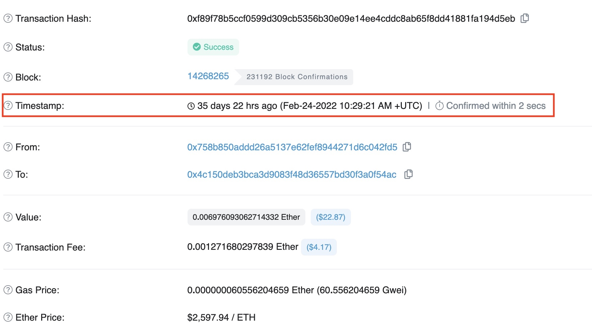

Le distribuite ledger tecnologie (DLTs), come blockchain ed IPFS, aprono nuovi scenari per quanto riguarda la notarizzazione, l'archiviazione dei documenti e lo scambio di informazione.
MOD si occuperà di ricerca e sviluppo di proposte da condividere con esperti del settore legal, in modo da costruire opportunità ad alto valore giuridico. La legislazione sulle DLTs procede a diverse velocità nei vari paesi del mondo, tuttavia in molti mercati esistono già decreti e proposte che spalancano le porte a prospettive interessanti. Gli Stati Uniti sono stati i primi ad essersi mossi, favorendo l'operato di aziende in questo framework decentralizzato. In Italia, il decreto Semplificazioni 2019 introduce la definizione normativa delle tecnologie DLTs e degli smart contract. Il decreto prevede, inoltre, che la memorizzazione di un documento informatico attraverso l'uso di tecnologie basate su registri distribuiti produca gli effetti giuridici della validazione temporale elettronica, attraverso il timestamp automaticamente prodotto dalle transazioni su blockchain.
Una marca temporale o timestamp è la sequenza di caratteri che rappresenta data e orario per accertare l'effettivo avvenimento di un certo evento. La data è di solito presentata in un formato compatibile, in modo che sia facile da comparare con un'altra per stabilirne l'ordine temporale. Il timestamp è un piccolo pezzo di dati archiviato in ogni blocco come un seriale univoco e la cui funzione principale è determinare il momento esatto in cui il blocco è stato estratto e convalidato dal network blockchain. Nell'immagine si può vedere il track record di una transazione su Ethereum, relativa al trasferimento di un NFT racchiuso in uno smart contract ERC721 standard.
Nell'immagine si può vedere il track record di una transazione su Ethereum, relativa al trasferimento di un NFT racchiuso in uno smart contract ERC721 standard:
MOD, basandosi sulle opportunità del decreto legge Semplificazioni del febbraio 2019, Art. 8 ter e studiando alcune soluzioni che trovino conformità con la regolamentazione emanata da CAD e AGID, sta sviluppando un software decentralizzato per validare e firmare documenti (opponibili a terzi anche in sede di giudizio). I dati saranno conservati in maniera sicura ed immutabile su IPFS, riducendo costi e aumentando significativamente la scalabilità del processo, la loro validazione avverrà grazie ad una transazione su blockchain. In entrambe le tecnologie vengono utilizzati gli stessi protocolli di hash crittografati, permettendo perciò di immagazzinare dati off-chain (IPFS), senza pesare economicamente sul blocco minato (on-chain). Nello specifico il costo di registrazione su blockchain dipende dai KiloBytes da caricare, utilizzando IPFS per i documenti originali e registrando su blockchain un file JSON ad esso collegato, si risparmiano notevolmente spazio e costi.
La strada per un futuro decentralizzato è già aperta, MOD studierà e proporrà strategie e soluzioni al passo con i tempi per semplificare e snellire procedure burocratiche, creando un network internazionale e riconosciuto.